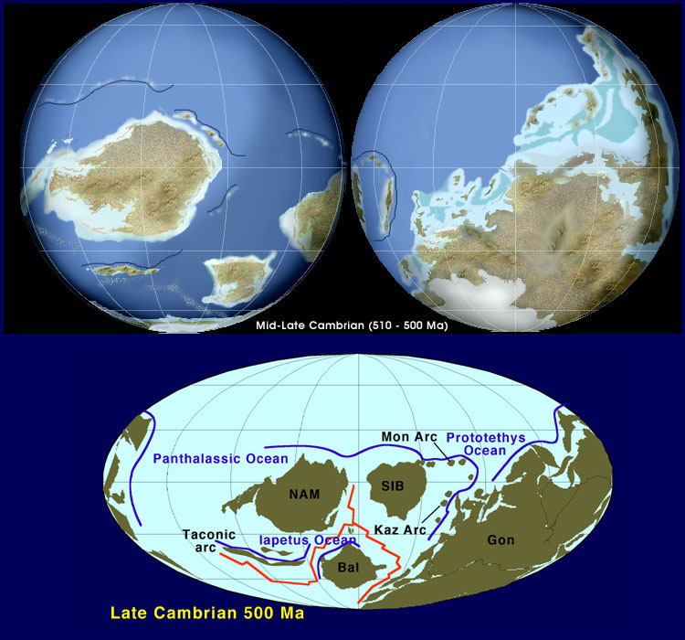

The Cambrian Explosion | The Ordovician | The Silurian | Learning Objectives | Terms | Review Questions | Links | References
The Paleozoic Era literally translates as the "time of ancient life" and spans the time period between 544 and 245 million years ago. The Paleozoic is the first of three eras within the Phanerozoic Eon (the time of visible life). While life originated during the Archean and increased in complexity during the earlier Proterozoic, the Paleozoic Era is marked by the spread of animals with hard preservable parts such as shells and exoskeletons. This has led to what is popularly known as the Cambrian Explosion, the sudden appearance of a stupendous array of animal life, much of which is not closely related to modern forms. Despite extinctions at various times, the Paleozoic is notable for the increasing modernization of life. By the end of the Paleozoic, almost all major groups of life had developed. The Paleozoic ended in the greatest mass extinction event in world history. During this massive die-off nearly 96% of all marine species went extinct. The cause of this greatest catastrophe in Earth history has been much investigated and scientific consensus of its cause is emerging.
During the Paleozoic we see several major advances in life. The aformentioned Cambrian Explosion is the first. The evolution of plants from some group of green algae during the Ordovician is another, since these plants moved from water onto land, paving the way for vertebrate animals to follow. The first vertebrates, amphibians, were little more than legged fish, although their remote descendants would come to rule the land as reptiles, the first truly terrestrial vertebrates.
Geologically, the Paleozoic is noted for the assembly of Pangaea, the world supercontinent proposed back in the 1912 book The Origin of Continents and Oceans by German meteorologist Alfred Wegener (1880-1930) as part of his continental drift hypothesis. At the close of the precambrian there was already a world supercontinent, Rodinia, that broke apart during the early Paleozoic.
Alfred Lothar Wegener (1880-1930), the visionary German scientist whose continental drift ideas would form a major part of the modern theory of plate tectonics. Image from http://geoweb.princeton.edu/courses/WebWhacker_2.0/WebWhacker_Database/WW171.html.
The Cambrian period, the first in the Paleozoic era, spans the time between 544 and 505 million years ago. During what is termed the Cambrian Explosion, living thiungs developed hard structures. The presence of these structures greatly enhanced the chance of an organism becoming a fossil. Prior to the Cambrian, fossils were quite rare and inconspicuous since the organisms were small. This scarcity of the precambrian fossil record is also a consequence of the soft-bodied forms of life needing exceptionally rare circumstances to form fossils.
The sudden appearance of relatively complex fossils in the Cambrian was a troubling issue to Charles Darwin. His ideas on evolution included descent with modification and the slow, gradual development of more complex creatures from simpler ones. The lack of a precambrian fossil record was compounded by the wild diversity seen during the Cambrian. Darwin's dilemma would not be solved until the 1960s when scientists got a better handle on the actual diversity of the precambrian biosphere.
The early Cambrian was a wild time for animal evolution. During a span of time perhaps as short as 5 million years numerous body plans developed, including the three animal body plans that exist today. All major animal phyla, save the Bryozoans, have their first appearance during the Cambrian. One of the dominant animal groups that appeared was the trilobites. These now-extinct members of the Phylum Arthroopoda became the dominant animals in many Cambrian marine environments. Another major change was the evolution and spread of the archaeocyathids, a group of sponges (Phylum Porifiera) that became extinct before the end of the Cambrian. Cladistic analysis by J. Reitner in 1990 suggests archaeocyathids are properly placed in the Phylum Porifera instead of having their own phylum. Before their extinction, however, they were important reef-building organisms, along with some calcareous algae. Some scientists speculate that archaeocyathids existed symbiotically with cyanobacteria, much the was modern coral do with zooxanthellae (symbiotic dinoflagellates). Paleontologists recognize an amazing 120 taxonomic families of archaeocyathids during the early Cambrian. From this great diversity the group declined to extinction by the close of the Cambrian.
First appearances and relative diversity (width of shaded area) for major groups of animals. Image from Purves et al., Life: The Science of Biology, 4th Edition, by Sinauer Associates (www.sinauer.com) and WH Freeman (www.whfreeman.com), used with permission.
Archaeocyathids, an extinct group of sponges, dominated the reefs of the cambrian seas. The image on the left is a cross-sectionn of the animal, while the right image shows the external morphology of several of these cone-shaped animals. Image from http://www.carleton.ca/~tpatters/teaching/intro/cambrian/cambrianex16.html.
This deposit of rare and exquisitely preserved fossils has been much touted in numerous publications. The deposit was discovered by geologist Charles D. Walcott, who stopped to look at his horse's hoof and spotted an odd fossil by the trail. Walcott returned the next field season (and four others) and excavated over 50,000 fossils, which he later formally named and described in scientific publications. Modern studies suggest the presence of approximately 125 different genera from the Burgess Shale, amking it the most complete and famous known Paleozoic assemblage. The organisms range from the prokaryotic cyanobacteria to eukaryotic green and red algae, to sponges, brachiopods, priapulids, annelids, and many different arthropod groups, as well as echinoderms and possibly one of the first chordates.
Left, Charles D. Walcott, the American paleontologist who discovered and made the first collections from the Burgess Shale in British Columbia, Canada. Image from http://www.carleton.ca/~tpatters/teaching/intro/cambrian/cambrianex20.html. Right, the Burgess Quarry. Image from http://www.carleton.ca/~tpatters/teaching/intro/cambrian/cambrianex25.html.
Reconstruction of the sea floor during the Burgess Shale time of the Cambrian period. Image from http://www.carleton.ca/~tpatters/teaching/intro/cambrian/cambrianex20.html.
One of the most common Burgess animals is ther arthropod Marella. These animals were small, and exhibited the jointed appendages characterizing the arthropods. These delicat looking arthropods are referred to as "lace crabs". The quality of preservation of these fossils is quite extraordinary. On many specimens dark stains are interpreted as body fluids that have leaked from the specimen after burial.
Marrella, a Burgess arthropod, Left, fossil impression, right reconstruction of the animal in life poisition. Left image from http://www.tyrrellmuseum.com/bshale/fmarrella.html, right image from http://www.carleton.ca/~tpatters/teaching/intro/cambrian/cambrianex27.html.
Trilobites, a dominant Cambrian animal, lso occur in the Burgess Shale in abundance. Trilobites are an extinct group of arthropods that were most dominant in the Cambrain before finally becoming extinct at the close of the Paleozoic. Like Marella and other arthropods, trilobites have a hard exoskeleton (that enhanced the chances of fossilization) and numerous jointed appendages. In the trilobite shown, details of the appendages are not clear.
Olenoides serratus, a large Burgess trilobite. Image from http://tabla.geo.ucalgary.ca/~macrae/Burgess_Shale/Olenoides.gif, photo © Andrew MacCrae, used by permission.
The Burgess deposits also yielded the oldest representative of the phylum Chordata, a small fossil known as Pikaia. Most specimens of Pikaia are between one and one and a half inches long. Chordates, the phylum to which humans belong, has three distinguishing characteristics, all of which are present in Pikaia. The extant animal known as a lancet bears at least a superficial resemblance to Pikaia.
Pikaia, the oldest known chordate. Note the head region of the animals shown above is on the left side of each image. Left image from http://www.dc.peachnet.edu/~pgore/geology/geo102/burgess/burgess.htm, right image from http://www.carleton.ca/~tpatters/teaching/intro/cambrian/cambrianex32.html.
While many of the Burgess animals can be ascribed to modern groups, a startling number of them do not belong in such a group. Opabinia shows a segment body, but has five eyes and a feeding appendage. No living animal is similar.
Opabinia, a Burgess animal of uncertain taxonomic group. Left image from http://www.carleton.ca/~tpatters/teaching/intro/cambrian/cambrianex29.html, right image from http://www.yale.edu/ypmip/locations/burgess/5809.html.
Among the animals of uncertain taxonomic affinity that characterize the Burgess fauna, Anomalocaris must rank as surely the biggest and baddest of the lot. Ranging up to about one half meter in length, this animal was the largest predator to range the Cambrian seas. Trilobite fossils have been recovered with what appears to be bite marks from the complex mouth structures of Anomalocaris. Usually Anomalocaris is found dissassociated, in fact the mouth parts, feeding appendages, and body were all described under different genus names. Rare fossils that show the articulation of these body parts have allowed scientists to reconstruct this animal.
Reconstruction of Anomalocaris, the first great predatory animal of the Cambrian. Image from http://www.burgess-shale.com/anomrecon.jpg.
The world supercontinent, Rodinia, that had existed at the close of the Proterozoic began to split apart due to rifting of various landmasses away from the whole. One such landmass was what eventually became North America. During the Cambrian North America moved northward toward the equator. The largest remaining landmass of Rodinia was Gondwana, composed of the present-day contnents of India, Australia, Antarctica, Africa, and South America. The lands that today form Europe were scattered and fragmented, for the most part in the southern hemisphere. The lack of landmass at either pole suggests relatively mild temperatures and an absence of glaciation, at least early in the Cambrian. Shallow seas flooded the edges of continents, creating many broad environments for marine animals and other organisms.
Reconstruction of the early Cambrian continents. Images from http://vishnu.glg.nau.edu/rcb/Ear_Camb.jpg.

Reconstruction of the late Cambrian continents. Images from http://vishnu.glg.nau.edu/rcb/Ear_Camb.jpg.
The Cambrian period is marked by as many as four mass extinctions. The first of these mass extinctions resulted in the disappearance of the archaeocyathids and a major group of trilobites. The later extinctions limited the diversity of conodonts, brachiopods, and other triolobite groups. The Cambrian is bracketed by large scale glaciation at the close of the Proterozoic and by a similar occurrence early in the Ordovician. Development of continental glaciers would have several consequences: cooling of the planet and a drop in sea level. Both of these might have happened quickly enough for a mass extinction to have resulted.

The major mass extinctions of the Phanerozoic. Image from http://www.carleton.ca/~tpatters/teaching/intro/extinction/extinction1.html.
The Ordovician period representes the period of geologic time between 505 to 440 million years ago. Following the extinctions at the close of the Cambrian period, diversification occurred among the survivors. Corals become dominant reef-building animals during the Ordovician, and continue their importance today. Bryozoans and algae were also dominant elements of the reef building biota. Trilobites, which had survived the end of the Cambrian, continued, but were not as dominant in the environment as they had been. The Ordovician is noteworthy because of the moves some green algae made toward the shoreline, and possibly onto land, becoming the first plants. Interesting animals of the period include the conodonts (thought to represent early vertebrates) and graptolites. The first fish also evolved.
Reconstruction of an Ordovician marine community. Image from http://seaborg.nmu.edu/earth/ordovic/ord04b.html.
Bryozoans are a group of organisms sometimes referred to as "moss animals". They form colonies, often consisting of millions of individuals. There are nearly 5000 living species and a great many more taxa known from the fossil record. Among invertebrate animal phyla, this is the only phylum that does not have representatives appearing during the Cambrian.
Hallopora, a bryozoan colony from the Ordovician of North America. Image from http://www.toyen.uio.no/palmus/galleri/montre/english/162_381.htm.
Brachiopods were present (although not major organisms in the environments) during the Cambrian, but after the Cambrian extinction, they underwent an adaptive radiation in the Ordovician. Brachiopods have bilaterally symmetrical shells, which make them among the most common marine fossils in Paleozoic rocks. Traditionally brachiopods were divided into articulate and inaticulate groups, depending on the presence or absence (respectively) of a hinge between the halves of the shell. The earliest brachiopods were inarticulated, and lacked that hinge. Lingula is an example of this type, with fossils very similar to that genus being found in Cambrian rocks, and persisting even today. Systematics of the brachiopods has been under intense revision lately, and the traditional split of the two groups may not in fact be a natural characteristic useful in taxonomy.

Extant Lingula from the Phillipines (left) and an Ordovician fossil assignable to the genus (right). Image from http://www.toyen.uio.no/palmus/galleri/montre/a31325.htm.
A collection of Ordovician brachiopods. Image from http://www.nautiloid.net/fossils/brachiopod/brach15.html.
Graptolites are an enigmatic fossil group that has considerable use in the correlation of Paleozoic rocks. These organisms are related to the extant phylum Hemichordata. Graptolites are thought to have floated in the water column above the seafloor, although a few are thought to have lived on the seabed. .

Nemagraptus gracilis, a graptolite from the Athens Shale (Ordovician) of Alabama. Image from http://www.premdesign.com/nemlrg.jpg, used as per webpage instructions.
Conodonts are another group of "odd fossils". At one time considered to be mouthparts of annelid worms, conodonts are now known to have been part of the "teeth" of an early vertebrate fish.
The phylum Mollusca increased in significance in the Ordovician faunas. Where the Cambrian seas had Anomalocaris as the largest free swimming predator, the Ordovician had swimming molluscs, a type known as a cephalopod. Nautiloids resemble, somewhat, their living distant relatives the chambered nautilus and squids.
Lituites littuus, an odd nautiloid fossil from the Ordovician of China. Image from http://www.extinctions.com, used with permission.
Gastropods, another class of the phylum Mollusca, also become more prevalent in the Ordovician seas. Ordovician deposits yield snails, as well as large, sedentary gastropods such as Maclurites.
Maclurites magnus, a large ancient gastropod. This image is from http://seaborg.nmu.edu/earth/ordovic/ord06b.html, used with permission.
Perhaps the most pround advance during the Ordovician was the development of plants from an ancestral group of green algae. Fossil and biochemical evidence indicates plants are descended from multicellular green algae. Various green algal groups have been proposed for this ancestral type, with the Charophytes often being prominently mentioned. Cladistic studies support the inclusion of the Charophytes (including the Coleochaetales) as sister taxa to the land plants. Algae dominated the oceans of the precambrian time over 700 million years ago. Between 500 and 400 million years ago, some algae made the transition to land, becoming plants by developing a series of adaptations to help them survive out of the water.
Phylogenetic reconstruction of the possible relationships between plant groups and their green algal ancestor. Note this drawing proposes a green algal group, the Charophytes, as possible ancestors for the plants. Image from Purves et al., Life: The Science of Biology, 4th Edition, by Sinauer Associates (www.sinauer.com) and WH Freeman (www.whfreeman.com), used with permission.
The Ordovician plant record consists solely of spored with a trilete mark, a y-shaped feature formed when the spores were formed by (presumably) meiosis. One possible interpretation of the presence of spores is that the land plant (trilete) spore have evolved prior to the move of plant ancestral types onto land.
The vertebrates evolved during the Cambrian period, possibly from a creature similar to the Burgess Shale animal Pikaia or an organism similar to the "conodont" animal. The oldest group of fish, the ostracodemrs, first appeared during the Cambrian, before their extinction at the close of the devonian. The Ordovician. was a time of great transgression of the seas onto the continents, producing a great many habitats in which new forms of life, such as fish, could develop. The exact appearance of the Ordovician fish in unclear. What we do have is fragments of hard coverings of soft tissue.
Reconstruction of the presumed appearance of an early ostracoderm fish. Image from http://cas.bellarmine.edu/tietjen/Evolution/early_ostracoderms.htm.
The Ordovician was a time of flooding of the continents with shallow seas. Organic reefs were abundant in middle to tropical paleolatitudes. By the end of th Ordovician most of the landmasses were close to or joined to Gondwana, which at bthat time was centered around the south pole. The late Ordovician also saw the spread of major glaciers in Gondwana, and the environmental conseqwuences that accompany that spread: sea-level falling, changes in oceanic circulation, cooling of the climate and restriction of the tropical belts. North America at this time was still astride the equator.
Reconstruction of the early Ordovician continents. Images from http://vishnu.glg.nau.edu/rcb/Ord.jpg.
The end of the Ordovicianperiod saw another mass extinction, accounting for the second most severe loss of marine species during the Phanerozoic. This mass extinction saw the loss of one third of all brachiopod and bryozoans, and the loss of groups of conodonts, trilobites, and graptolites. The falling sea-levels caused by the growth of the continental glaciers caused much of the reef-building fauna to become either locally or globally extinct. Over one hundred families of marine invertebrates disappeared. However, this loss paved the way for an adaptive radiation during the next period, the Silurian.
The Silurian period (440 to 410 million years ago) saw a return to the moderate climates that had existed before the Cambrian and Ordovician glaciations. Eukaryotic life colonized terrestrial environments. Fish underwent an adaptive radiation with the jawed fish appearing and spreading into freshwater.
Corals, which had appeared possibly as early as the late Proterozoic, diversified into a number of groups during the Silurian. Tabulate corals and rugose corals were major components of the new, larger reefs built during the Silurian through Permian. Rugose corals included the horn corals, while tabulate corals were colonial. Both the rugose and tabulate corals went extinct at the close of the Permian period.
Crinoids, a group of organisms in the phylym Echinodermata, had been present since the Ordovician (and possibly the Cambrian). With the flooding of continents during the Silurian, crinoids underwent an adaptive radiation and produced a number of interesting forms. The croinoid fossil can consist of three body parts, usually separated by sedimentological processes after the organism died: the basal holdfast, stalk, and head. Crinoid stems were so common in some areas of the U.S. midwest that native peoples used them as a form of currency. Crinoids were significant elements of the marine fauna until they nearly went extinct (down to a single genus) at the close of the Permian period.
This rare specimen (L) of a Silurian crinoid, Icthyocrinus sp., from the Rochester Shale of New York illustrates the three regions of the body that can be often found as isolated fossils. The specimen of Caryocrinites ornatus (R) shows details of the stalk and head region. Images from http://www.extinctions.com, used with permission.
Stromatoporoids, once thought to be coral, but actually sponges, continued their significant role in Silurian reefs. Some stromatoporoid specimens are over 16 feet in diameter. Stromatoporoids finally went extinct at the end of the Cretaceous extinction.
One arthropod group became more diverse during the Silurian and Devonian times, the eurypterids, or sea scorpions. The oldest fossil eurypterids are from the Ordovician, but the group increased in species number and size during the Silurian-Devonian before its eventual extinction at the close of the Permian. Eurypterids were chelicerates, the group of arthropods that includes the spiders and scorpions. Eurypterids were among the major swimming predators of the Silurian-Devonian seas. Eurypterids are so common in the Silurian rocks of New York that they are the state fossil.
Eurypterus remipes, from the Fiddlers Green Formation in New York. Image from http://www.extinctions.com, used with permission.
Fish continued to divesify, with the oldest jawed fish, the placoderms, joining the ostracoderms and acanthodian fish. The great explosion of these fish groups would occur during the Devonian period. During the Silurian, however, fish established themselves in both marine and freshwater environments.
Perhaps the most significant advance of life during the Silurian was the colonization of the land, first by plants and insects, and later (during the devonian) by certain "fish" and their offshoots, the amphibians. The Silurian land was populated by early land plants as well as a variety of insects. Both plants and animals had a number of challenges when they moved from the water to land.
Plants divide into two large groups: vascular plants that contain lignified conducting cells, and the nonvascular plants, which do not. Some Silurian plant fossils might be algae or nonvascular plants. Vascular plants developed during the Silurian period, 400 million years ago. The earliest vascular plants had no roots, leaves, fruits, or flowers.
Cooksonia is a typical early vascular plant. It was less than 15 cm tall, with stems that dichotomously branched. Dichotomous branching (where the stem divides into two ewqual branches) appears a primitive or ancestral trait in vascular plants. Some branches terminated in sporangia that produced a single size of spore.
Many scientists now consider "Cooksonia" an evolutionary grade rather than a true monophyletic taxon. Their main argument is that not all stems of Cooksonia-type plants have vascular tissue. The evolutionary situation of a grade would have some members of the group having the trait, others not. The shapes of sporangia on various specimens of Cooksonia also vary considerably.

Cooksonia fossil specimen (L) and reconstruction (R). Both Images from http://www.ucmp.berkeley.edu.
Specimen of Cooksonia pertoni with sporangia, from the Silurian of Shrewsbury, England. Image from http://www.xs4all.org/~steurh/eng/cook.html.
Many of the early land plant fossils are not unequivocally those of vascular plants. The best such evidence is the presence of a trilete mark on spores produced by meiosis in a tetrahedral tetrad.

A tetrad of early land plant trilete spores from the Lower Silurian Tuscarora Formation of central Pennsylvania. Image from http://www.ucmp.berkeley.edu/IB181/VPL/Elp/ElpP/Elp9l.jpeg.
Baragwanathia is an undoubted lycophyte from the middle Silurian deposits of Australia. It has microphyllous leaves spirally attached to the stem, and sporangia clustered in some areas of the plant, although not in terminal strobili. Many paleobotanists consider Baragwanathia ancestral to the modern lycophytes and later lepidodendrids of the carboniferous forests.

Reconstruction of Baragwanathia longifolia, from the middle Silurian of Australia. Image from http://www.ucmp.berkeley.edu/IB181/VPL/Lyco/Lyco1.html.
Baragwanathia longifolia, an Australian lycopod from Yea, Victoria and other localities. This plant has been controversial for some time because of its potential age as upper Silurian, predating or corresponding in age with much more primitive Cooksonia-like vascular plants. In the photograph above you can see the relatively stout axis thickly clothed by numerous helically-arranged microphylls. Scale is in mm. Image from http://lsvl.la.asu.edu/plb407/kpigg/baragwanathia.htm.
Silurian climates were characterized by a warming and return to moderate temperatures following the terminal Ordovician glaciation (and the resulting mass extinction). North America remained near the equator, but began to join with Baltical to the east and Siberia to the north. Gondwana remained as a large southern hemisphere landmass, although there is no evidence of glaciation there during the Silurian. The collision of Baltica and North America caused mountain building (what geologists refer to as the Caledonian orogeny) along with the closing of the ancient Iapetus ocean. Between Baltica and Gondwana, however, a new ocean, Tethys, began to form. The end of the Silurian is not marked by a major mass extinction event.
Reconstruction of the middle Silurian continents. Images from http://vishnu.glg.nau.edu/rcb/Sil.jpg.

One way to represent geological time. Note the break during the precambrian. If the vertical scale was truly to scale the precambrian would account for 7/8 of the graphic. This image is from http://www.clearlight.com/~mhieb/WVFossils/GeolTimeScale.html.
|
acritarchs |
|||||
|
zooxanthellae |
Reitner, J. 1990. Polyphyletic origin of the "Sphinctozoans". In Rutzler, K. (ed.), New Perspectives in Sponge Biology, Proceedings of the Third International Conference on the Biology of Sponges (Woods Hole). pp. 33-42. Smithsonian Institution Press, Washington, DC.
Schopf, J. W. 1999 Cradle of Life: The Discovery of earth's Earliest Fossils. Princeton University Press, 367 p.
Wegener, A.L. 1912. The Origin of Continents and Oceans John Biram, translator. Mineola, New York: Dover Publications, 1966.
Email: mj.farabee@emcmail.maricopa.edu
Last modified:
The URL of this page is:
{kind=link}
{kind=link}
{kind=link}
{kind=link}
{kind=link}
{kind=link}
{kind=link}